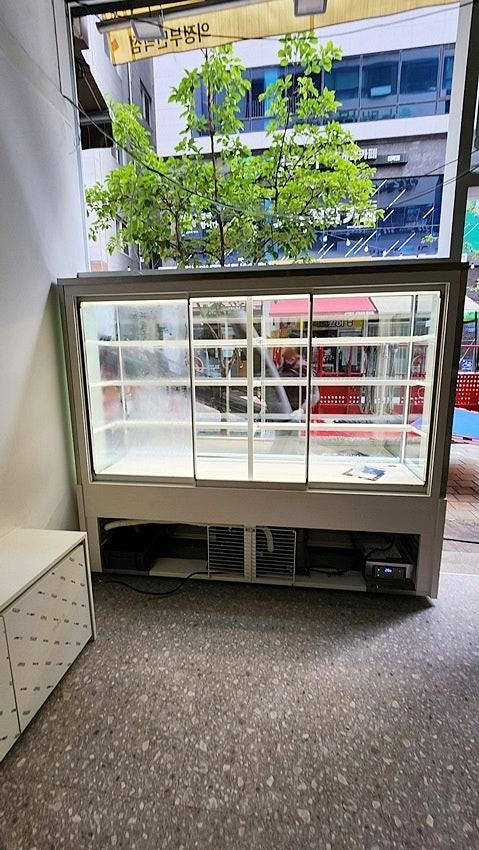
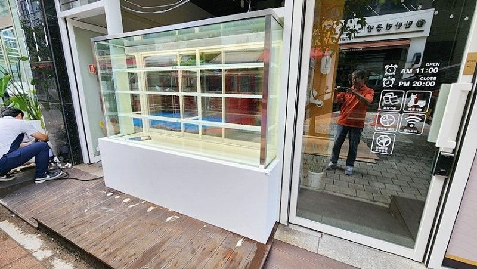
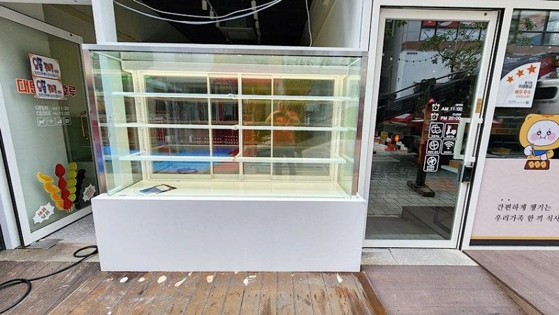
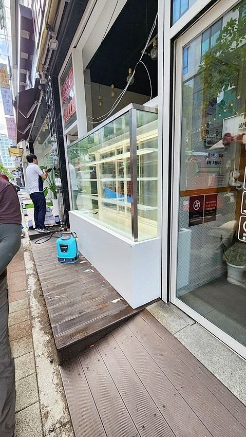
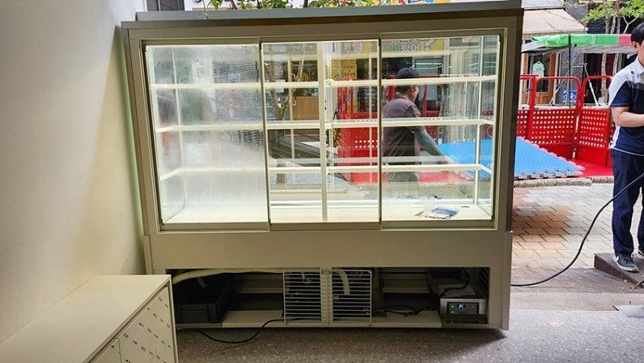
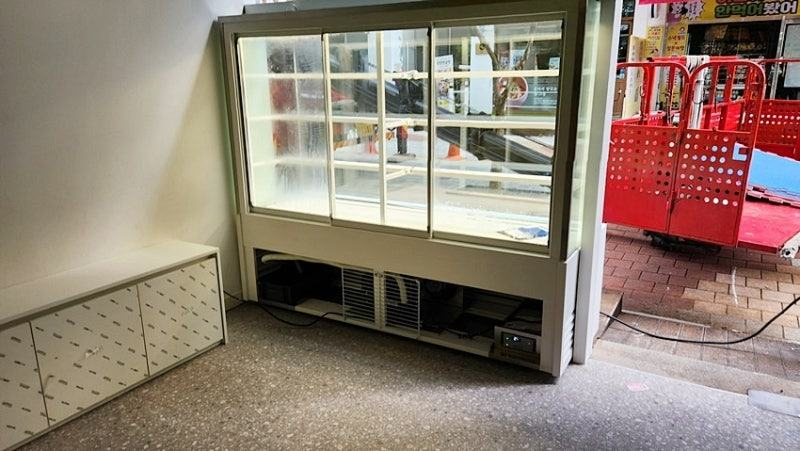

한성제품
냉장쇼케이스 맞춤제작, 상담부터 설치까지 사장님이 정할 것

냉장쇼케이스 맞춤제작은 설치할 자리 치수, 진열할 상품과 용기 크기, 누가 어느 쪽에서 문을 여는지 세 가지가 정해지면 바로 설계에 들어갈 수 있습니다. 나머지 외관 색상, 조명, 단 높이는 상담 과정에서 매장 분위기에 맞춰 함께 고르시면 됩니다.
안녕하세요. 매장마다 다른 냉장쇼케이스를 직접 설계하고 만드는 한성쇼케이스입니다.
맞춤제작을 고민하시는 사장님들께 가장 많이 듣는 말이 "뭘 어디까지 정해서 연락드려야 할지 모르겠다"는 것입니다.
기성품은 사진 보고 고르면 끝인데, 맞춤은 처음부터 정할 게 많아 보이니까요.
실제로는 사장님이 처음에 정해 오셔야 할 것은 몇 가지뿐이고, 나머지는 상담과 디자인 과정에서 하나씩 좁혀 갑니다.
다만 그 몇 가지가 빠지면 상담이 길어지고 제작 일정도 밀리기 쉽습니다.
오늘은 냉장쇼케이스 맞춤제작이 어떤 순서로 진행되는지, 단계마다 사장님이 무엇을 정하면 되는지 차근차근 설명해 드리겠습니다.
1. 첫 상담 전에 정해 둘 세 가지
첫째는 설치 자리 치수입니다. 쇼케이스가 놓일 벽이나 카운터의 폭, 깊이, 천장까지 높이, 그리고 출입문 폭을 재 두세요.
반입 경로가 좁으면 분리형으로 만들어야 할 수도 있어 출입문 치수도 꼭 필요합니다.
둘째는 진열할 상품입니다. 케이크인지 음료인지, 꼬치에 꽂은 디저트처럼 세워 두는 상품인지에 따라 단 높이와 선반 깊이가 완전히 달라집니다.
셋째는 문을 누가 여느냐입니다. 손님이 직접 꺼내는지, 직원이 뒤에서 꺼내 주는지에 따라 앞문형과 뒷문형이 갈립니다.
- 설치 자리 폭·깊이·높이와 출입문 폭
- 진열 상품과 용기·포장 크기
- 손님이 여는지 직원이 여는지
2. 상담과 디자인 단계
전화로 업종과 대략의 크기를 듣고 나면, 필요할 때 직접 만나 매장 분위기와 원하는 느낌을 함께 정리합니다.
이때 매장 사진이나 인테리어 시안을 보여 주시면 외관 색상과 프레임 소재를 고르기가 훨씬 수월합니다.
디자인 단계에서는 조명 색, 내부 단차, 유리 형태, 손잡이 위치처럼 작은 부분까지 정합니다. 기성품에서는 고를 수 없는 부분이라 맞춤제작의 차이가 가장 크게 드러나는 단계입니다.
디자인안이 나오면 실제 매장 사진 위에 놓았을 때 어떻게 보일지 함께 확인해 보세요. 통로 쪽으로 튀어나오는 부분이나 콘센트를 가리는 부분이 이 단계에서 걸러집니다.


3. 제작과 설치 단계
디자인이 확정되면 공장에서 제작에 들어갑니다. 제작 기간은 크기와 구성, 그 시기 물량에 따라 달라지니 오픈 날짜가 정해져 있다면 상담 때 미리 말씀해 주세요.
설치 당일에는 반입 경로를 확보해 두시고, 전원과 배수 위치가 도면대로 준비돼 있는지 확인해 주시면 됩니다.
설치 후에는 설정 온도까지 안정적으로 내려가는지 확인한 뒤 상품을 채우시는 게 좋습니다.
- 오픈 날짜를 상담 초기에 공유
- 설치 전 반입 경로 비워 두기
- 전원·배수 위치 도면과 대조
4. 기성품으로 충분한 경우
자리가 넓고 반듯해서 기성 규격이 그대로 들어가고, 매장 인테리어와 색이 크게 상관없다면 굳이 맞춤을 고집하지 않으셔도 됩니다.
맞춤제작이 힘을 발휘하는 것은 자리가 애매하거나, 상품이 특이하거나, 쇼케이스가 매장의 얼굴 역할을 해야 할 때입니다.
어느 쪽이든 고장이 났을 때 가까운 곳에서 수리를 받을 수 있는지는 꼭 확인하세요. 전국 240여 개 A/S 센터처럼 사후관리 체계가 갖춰져 있는지가 오래 쓰는 데 중요합니다.
체크리스트
- 설치 자리와 출입문 실측
- 진열 상품과 용기 크기
- 앞문형·뒷문형 결정
- 매장 사진과 인테리어 시안
- 오픈 예정일
- A/S 접수 체계
탕후루 진열용 뒷문형 냉장쇼케이스 맞춤 사례
탕후루를 보관하면서 진열까지 할 냉장쇼케이스가 필요하다는 문의로 시작한 사례입니다. 먼저 전화로 간단히 상황을 듣고, 이후 직접 만나 가게 공간과 분위기를 확인한 뒤 크기와 디자인을 정했습니다.
손님이 고른 상품을 직원이 빠르게 꺼내 줄 수 있도록 뒤에서 문이 열리는 방식으로 만들었고, 밖에서 한눈에 보이면서도 관리하기 쉬운 깔끔한 외관으로 마감했습니다.
상담부터 제작, 설치까지 직접 진행해 처음 이야기한 구성대로 완성됐습니다.



자주 묻는 질문
도면이 없어도 맞춤제작 상담이 가능한가요?
가능합니다. 설치할 자리의 폭·깊이·높이와 출입문 폭만 재서 알려 주시고, 매장 사진을 함께 보내 주시면 상담을 시작할 수 있습니다.
맞춤제작이면 디자인을 처음부터 제가 다 정해야 하나요?
그렇지 않습니다. 쇼케이스 전문 디자이너가 상주해 업종과 매장 분위기에 맞는 구성을 먼저 제안해 드리고, 사장님은 그중에서 고르거나 수정 요청을 하시면 됩니다.
맞춤 냉장쇼케이스도 A/S를 받을 수 있나요?
맞춤 제품도 동일하게 A/S를 받으실 수 있습니다. 전국 240여 개 A/S 센터와 대표전화 031-986-2458로 접수하시면 됩니다.
매장 조건에 맞춰 만드는 한성쇼케이스
원하시는 제품 사진과 설치할 공간 사진만 보내 주셔도 매장에 맞는 구성을 추천해 드립니다.
- 전국 240여 개 A/S 전담 센터 운영
- 본사 대량 자재 매입으로 품질 대비 합리적인 가격
- 유럽제·삼성 냉각 콤프레셔 적용
- 국내 최초 쇼케이스 전문 디자이너 상주
매장 폭과 원하는 진열 구성을 알려 주세요. 실측과 견적을 안내해 드립니다.
031-986-2458